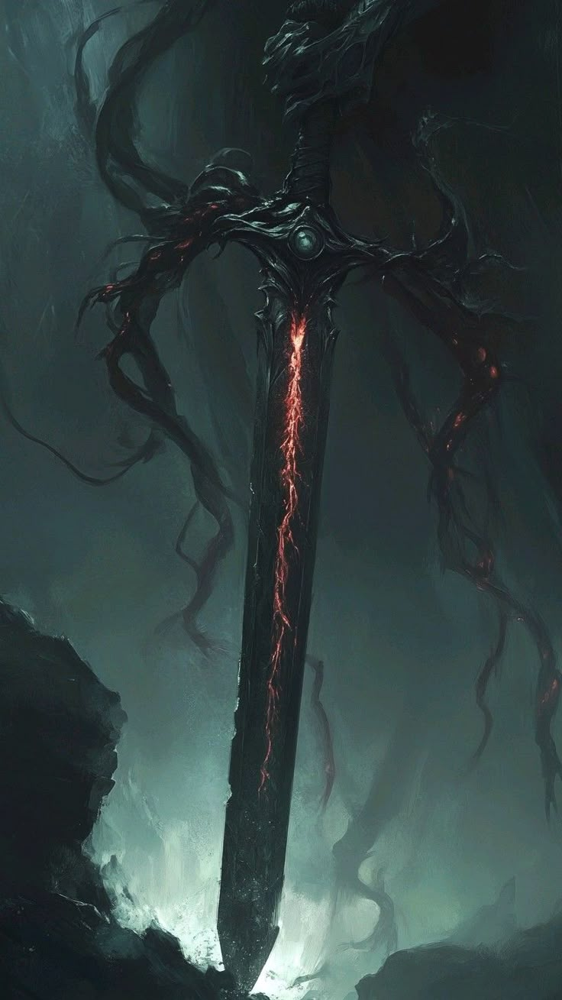

WIKIPEDIA

| Title | Blood Sovereign |
| Threat | Catastrophic |
| Novel | Crimson Tide |
| Role | Life Binder |
Sanguinuus is the embodiment of the flowing essence, a master of vitality who commands the red currents of existence. He does not seek the throne of men but the pulse that keeps them tethered to the waking world.
Making death itself beg for mercy. A virus of endings, infecting every moment with the promise of something worse than oblivion. Not a champion of any-cause, nor a savior of any realms. Conceived not in darkness nor void, but in the cancer that grows between heartbeats
Background
Born from the overflow of the world's original font, Sanguinuus has existed as long as there has been heat in the veins of the living. He is the guardian of the crimson transition between life and the beyond.
He views the world as a network of vessels and currents, moving through history like a silent heartbeat that ensures the cycle of renewal never truly grinds to a halt.
Personality
Sanguinuus is clinical and precise, treating every interaction with the weight of a life or death decision. He possesses a strange form of empathy that allows him to feel the strain on every soul nearby.
He is neither cruel nor kind, but rather an elemental force that acts when the balance of vitality is threatened, showing a ruthless efficiency in preserving the flow of the world.
Appearance
His physical form is a masterpiece of fluid grace, often appearing draped in robes that seem to ripple like liquid. His presence brings a warmth to the air that feels both comforting and suffocating.
His eyes glow with a deep ruby light that reflects the countless lives he has witnessed, and his touch is said to be enough to either mend a broken heart or stop one entirely.
Abilities
Through the Vessel Control technique, Sanguinuus can manipulate the internal flow of any entity within his range. He can accelerate healing or induce a total systemic shutdown with a flick of his wrist.
His primary art, Heartbeat Echo, allows him to mirror the life force of his enemies, turning their own strength against them until they are left drained and empty of all will.
History
Shinigami Blessing
In the chronicles of the old era, Sanguinuus was the one who ended the Great Coagulation, a period where time and life had become stagnant. He tore through the stillness to restore the motion of the spheres.
By sacrificing a portion of his own essence, he created the Eternal Arteries, the spiritual paths that allow mana to flow across the different realms today.

Since that time, he has remained in the shadows, only appearing when the world becomes too still or when a new horror threatens to poison the very life force of the inhabitants of the Mere.